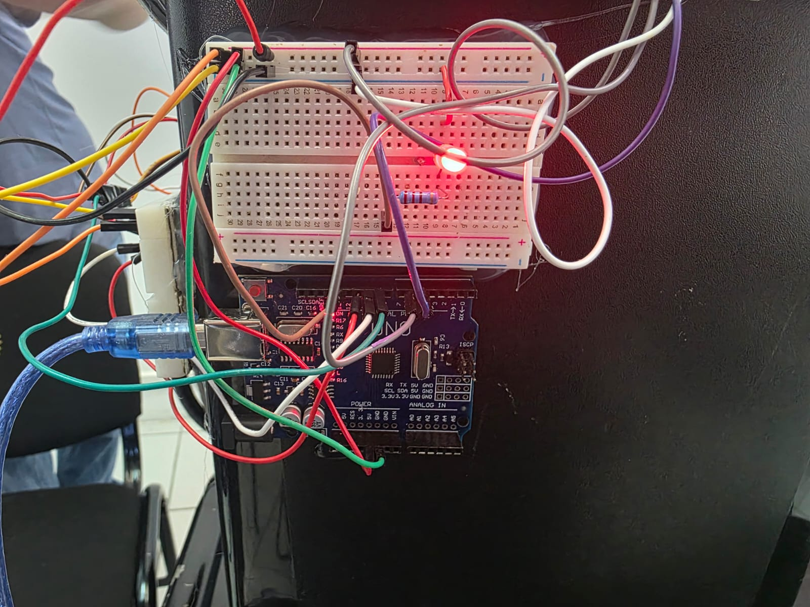
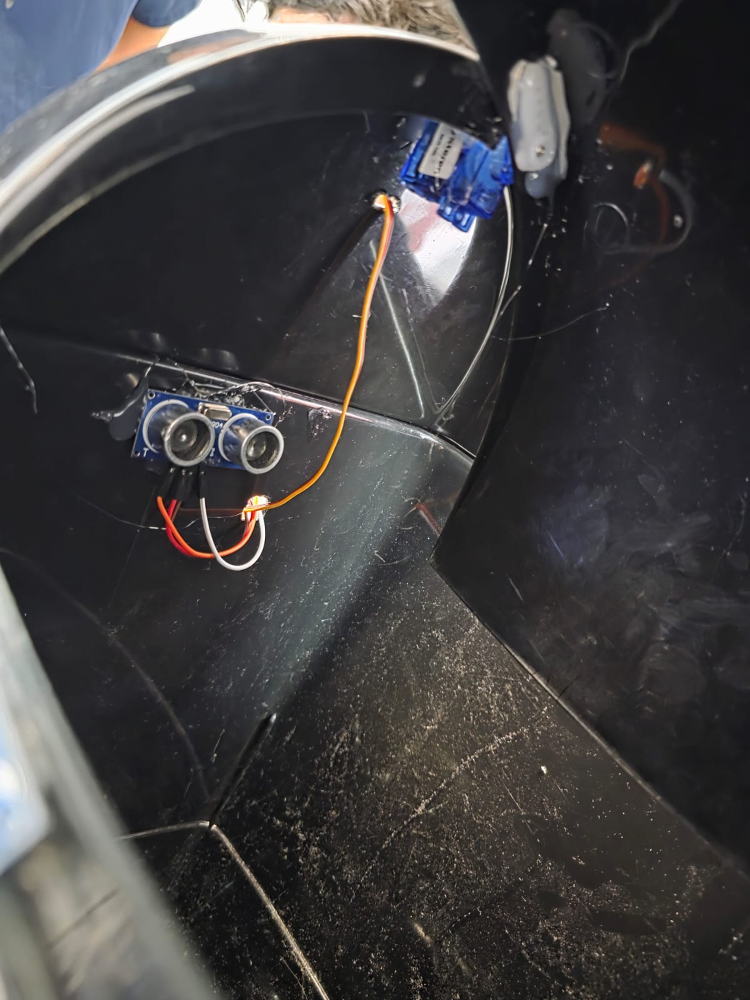
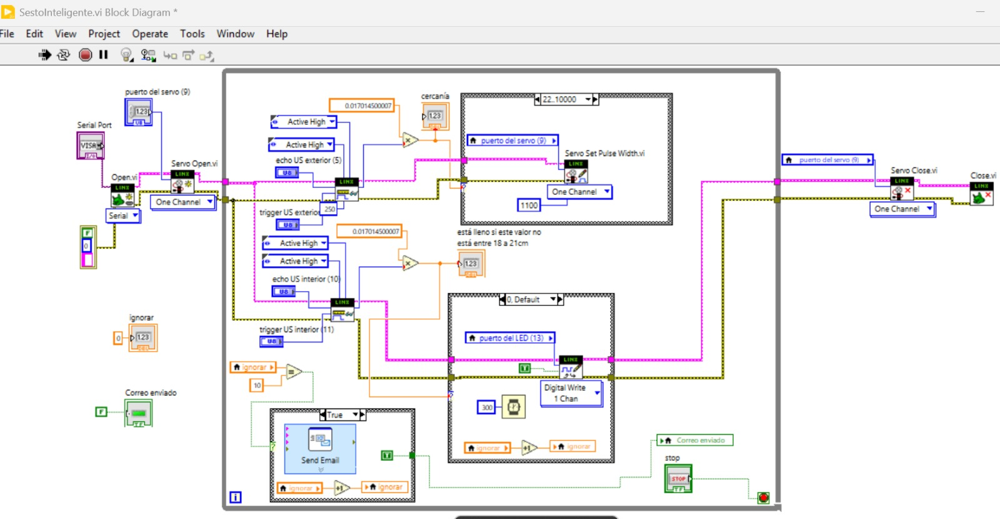
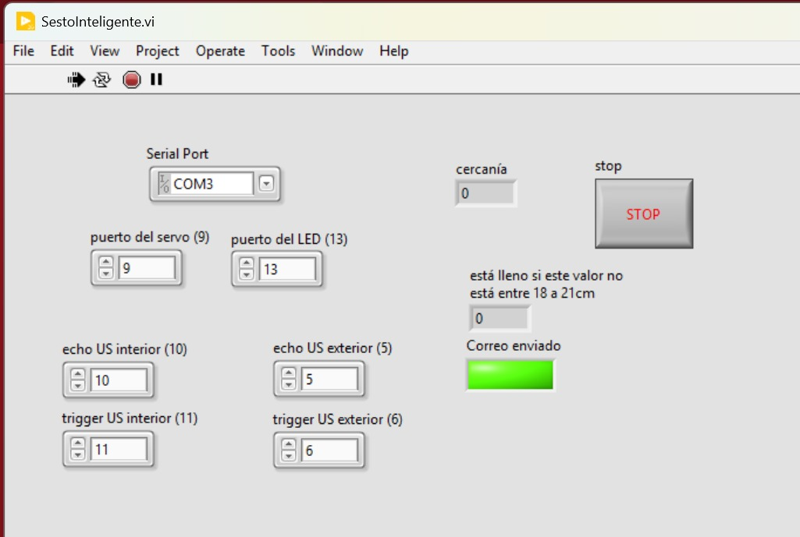
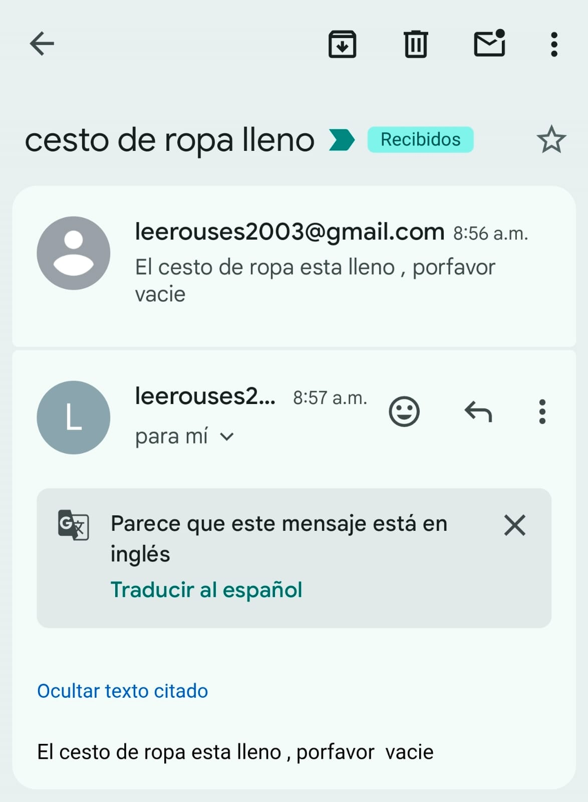

Carrera: Ingeniería Electrónica
Materia: Industria Inteligente
Docente: Fátima Maricela García Khols
Equipo No. 5
Marcos Alcocer Cornejo
Maximiliano Rodríguez Araiza
César Humberto Sil Heredia
En el marco del desarrollo de tecnologías orientadas a la automatización residencial e Internet de las Cosas (IoT), la optimización de las tareas cotidianas mediante sistemas embebidos se ha vuelto un área de estudio fundamental. Los contenedores de residuos convencionales presentan limitaciones de higiene al requerir contacto físico para su apertura y carecen de mecanismos que informen de manera remota su estado de capacidad, lo que suele derivar en desbordamientos o recolecciones ineficientes. Este proyecto consiste en el diseño, desarrollo e implementación de un prototipo de cesto de ropa inteligente controlado mediante la plataforma LabVIEW y la interfaz LINX, interconectado con un microcontrolador Arduino Uno. El sistema integra dos sensores ultrasónicos HC-SR04 como transductores principales y un servomotor como actuador electromecánico. El objetivo primordial es doble: por un lado, mejorar la ergonomía e higiene mediante la apertura automatizada de la tapa por detección de presencia; por otro lado, optimizar la gestión logística doméstica a través de la monitorización en tiempo real del volumen interno del contenedor. Al superar los umbrales de llenado críticos, el sistema ejecuta una alerta visual física y una rutina de comunicación por protocolo SMTP para enviar una notificación por correo electrónico automatizada, demostrando la viabilidad de acoplar hardware de bajo costo con entornos de programación gráfica industrial para soluciones del hogar inteligente.
Fase 1: Recopilación y Preparación de Hardware Componentes base: Se seleccionó una tarjeta de desarrollo Arduino Uno como unidad central de adquisición de datos, dos sensores de distancia por ultrasonido HC-SR04, una protoboard, un servomotor para el torque de la tapa, un LED indicador, una resistencia de protección de 330ohms cableado de conexión. Montaje mecánico: Tal como se muestra en las imágenes se fijó la protoboard y el Arduino a un costado del contenedor plástico mediante adhesivo térmico. El primer sensor ultrasónico (presencia exterior) se colocó de frente debajo del mecanismo de la tapa basculante para maximizar el rango de lectura perimetral, mientras que el segundo sensor se aisló internamente apuntando hacia el fondo del contenedor.
Fase 2: Cableado e Interconexión Eléctrica Se acoplaron las líneas de alimentación común (5v y GND ) desde el Arduino hacia los rieles de la protoboard. El sensor ultrasónico exterior se direccionó para compartir los pines digitales de disparo (trigger) y eco (echo) en el pin digital 5. El sensor interior se cableó utilizando los pines digitales 10 y 11. Se conectó la línea de señal del servomotor al pin digital 9. El circuito cerrado del LED de alerta se enlazó en serie con la resistencia limitadora de corriente hacia el pin digital 13 de la placa.
Fase 3: Programación y Configuración en LabVIEW Se instaló el firmware de la librería LINX en el Arduino Uno para habilitar la comunicación en tiempo real a través del puerto serial virtual (VISA). Se construyó el diagrama de bloques estructurado dentro de un ciclo While Loop general con las siguientes condiciones lógicas: Control de apertura: Se configuró una constante matemática para procesar la señal de tiempo de retorno del sensor exterior. Si el valor calculado de "cercanía" está por debajo del rango límite, se dispara la estructura de caso enviando un ancho de pulso de 1100us al pin 9 para accionar el servomotor. Lógica de llenado y alertas: Se programó una ventana de tolerancia para el sensor interno. Si la distancia medida rompe el intervalo establecido de 18 a 21cm (lo que indica acumulación de objetos bloqueando el sensor), el programa ingresa al subdiagrama True. Aquí se activa la escritura digital del pin 13 para encender el LED con un retraso físico de 300ms y simultáneamente se ejecuta el bloque Send Email. Sistema anti-saturación: Se implementó una variable local denominada ignorar conectada a un comparador. Al activarse el aviso de llenado, se incrementa un contador unitario; la notificación por correo solo se efectúa de manera controlada mientras el contador no sature el límite de 10 iteraciones, evitando el envío masivo de spam.

Figura 1. Montaje electrónico del sistema basado en Arduino Uno.

Figura 2. Integración interna del sensor ultrasónico y servomotor.

Figura 3. Diagrama de bloques en LabVIEW.

Figura 4. Interfaz gráfica de usuario en LabVIEW.

Figura 5. Evidencia del envío de correo automático.
Marcos Alcocer Cornejo: Pudimos analizar la excelente sinergia que existe entre el entorno de programación gráfica LabVIEW y la arquitectura compacta del Arduino Nano para la automatización de tareas domésticas. Como observación general del proyecto, la plataforma LINX facilitó un puente de comunicación en tiempo real que permitió procesar instantáneamente los datos de los sensores de proximidad para controlar la apertura física de la tapa; esto demuestra que no se requieren sistemas industriales costosos para transformar un contenedor de basura convencional en un dispositivo inteligente, higiénico y de respuesta rápida
Maximiliano Rodríguez Araiza: Durante las etapas de prueba del sistema, nos fue posible observar cómo la lógica de programación en LabVIEW resolvió de manera eficiente los desafíos físicos del entorno. La observación clave en el funcionamiento del bote fue el comportamiento del sensor ultrasónico interior: dado que los residuos se acomodan de forma irregular y pueden generar falsos positivos, la programación matemática y el establecimiento del rango de detección de 18 a 21 cm permitieron que el software filtrara el ruido de las lecturas, asegurando que el LED de alerta físico y la notificación de contenedor lleno se activaran únicamente bajo condiciones reales de saturación.
César Humberto Sil Heredia: Pudimos analizar el proyecto desde la perspectiva de Internet de las Cosas (IoT), concluyendo que el diseño lógico implementado es fundamental para la viabilidad comercial o residencial de este tipo de tecnología. Nuestra observación final destaca que la inclusión de la variable ignorar y el bloque Send Email dentro del ciclo de LabVIEW marcan la verdadera diferencia en el proyecto; sin este control por software, el microcontrolador Arduino Nano saturaría los servicios de red enviando alertas repetitivas, demostrando que un diseño de ingeniería exitoso requiere un equilibrio perfecto entre la distribución física de los componentes y la optimización del código de comunicación.
[1] R. C. Dorf y R. H. Bishop, Sistemas de control moderno, 12ª ed. Boston, MA, USA: Pearson, 2011, pp. 245-278.
[2] J. García Martínez y A. López Pérez, 'Diseño de sistemas embebidos para IoT aplicado a la gestión inteligente de residuos,' Revista Iberoamericana de Automática e Informática Industrial, vol. 18, no. 3, pp. 312-324, jul. 2021.
[3] National Instruments, LabVIEW User Manual, versión 2023. Austin, TX, USA: National Instruments Corporation, 2023, pp. 45-89.
[4] SIMCom Wireless Solutions, SIM800L Hardware Design Guide, versión 1.02. Shanghái, China: SIMCom Wireless Solutions Ltd., 2016, pp. 12-34.